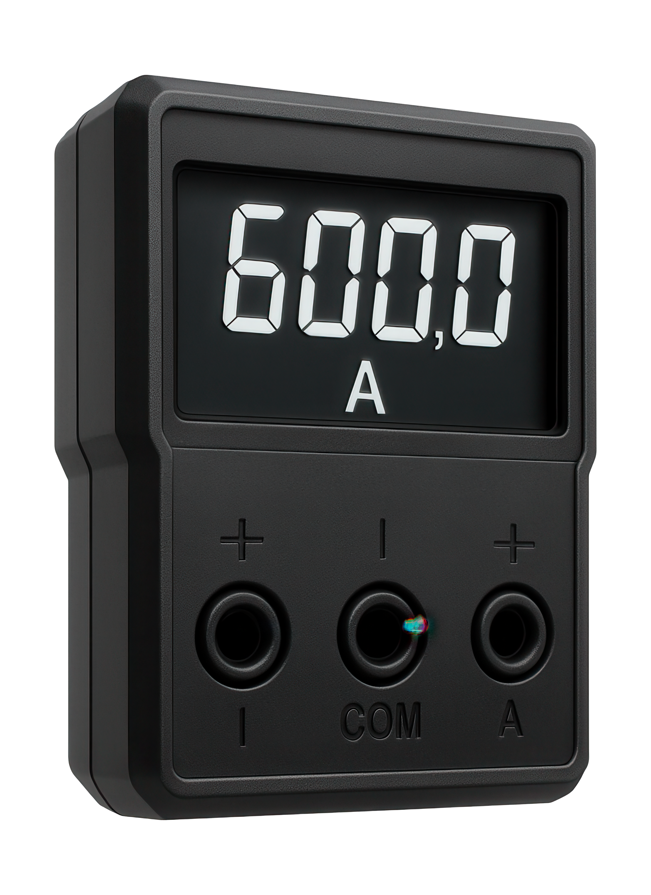

Proprietăți cheie
- Domeniu măsură 0–30A AC, acuratețe ±1.5%.
- Temperatură de operare -25°C ~ +50°C, dimensiuni 63 x 55 x 60 mm.
- Montaj pe panou cu șuruburi, necesită shunt extern (neinclus).
Aparate de măsură
Modelul 30A AC este proiectat pentru măsurarea curentului alternativ în echipamente electrice, tablouri de distribuție sau panouri de control și se montează rapid cu șuruburi.

Se montează în serie cu componenta analizată, iar pentru precizie optimă se verifică plaja de măsură și se calibrează periodic. Shuntul extern se conectează conform documentației echipamentului.